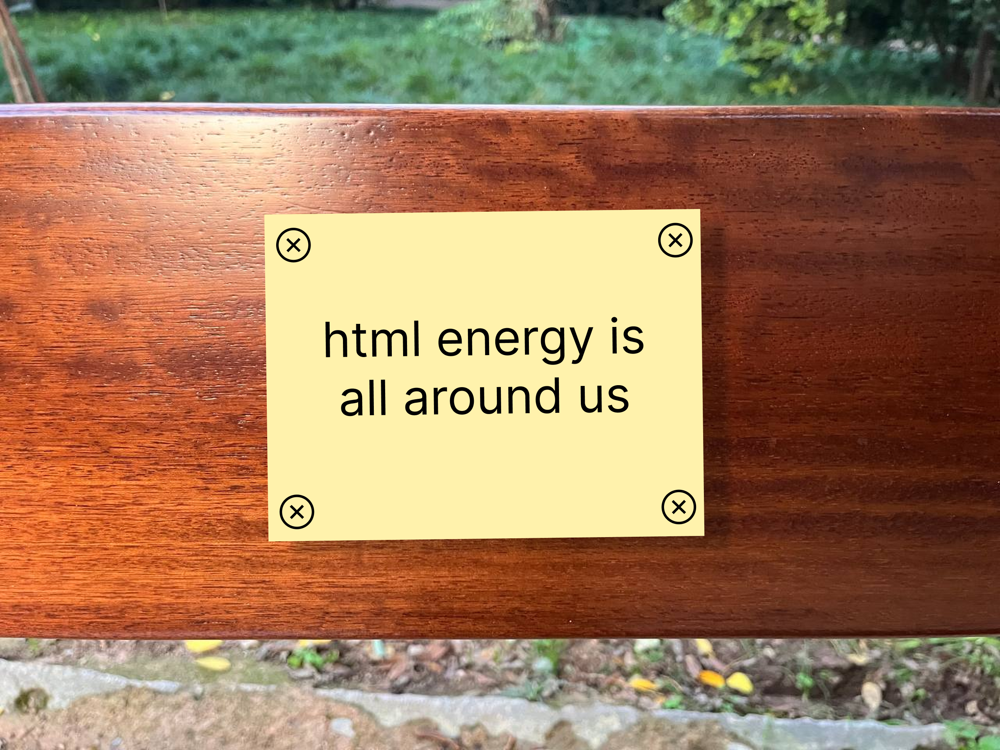
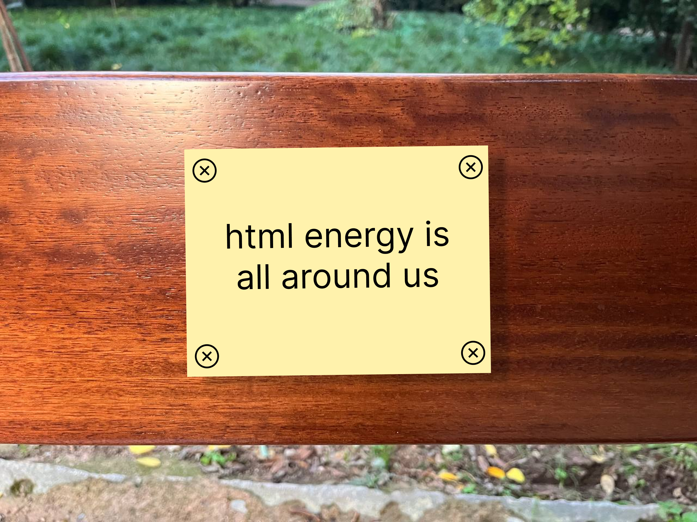

HTML Energy
a park bench dedicated to html
a place for the <body> ... for writing html together irl ... a monument

 

The first bench will be in Prospect Park, Brooklyn.
If we reach our goal and beyond we will install others in different cities.
A Meeting Place
Our dedicated HTML park bench in Prospect Park symbolizes a unique gathering spot, a physical representation of the communal spirit of the web. It's not just a bench; it's a meeting point for enthusiasts, learners, and experts alike to share, collaborate, and celebrate the vibrancy of the web. This bench is a testament to the power of HTML in connecting people, just as it connects the vast expanse of the internet.
The personal is public
By dedicating a bench to HTML, we are reinforcing our commitment to our core goals. This bench is a beacon, highlighting the human element of the web – it’s alive, evolving, and crafted by human hands. It serves as a tangible milestone in our journey to make the web more accessible and to embed HTML deeper into educational curricula. Each visitor to the bench is a step towards realizing these ambitions.
Supports HTML Energy Activities
This bench is more than just a place to sit; it's a symbol of the raw, dynamic energy of HTML. It's a physical embodiment of HTML, mirroring the enthusiasm we share through our podcast, freewrites, and various community engagements. It's a reminder that HTML is not just code, but a canvas for creativity, a tool for education, and a medium for expression. Your support helps us bring this energy to life and extend our reach further. Thank you for being part of this journey!
We need your help to make this a reality...
Support the bench and HTML Energy
Thank you for your energy...
Elliott believes in HTML
Laurel believes in HTML
Kristoffer believes in HTML
Uno believes in HTML
Athens believes in HTML